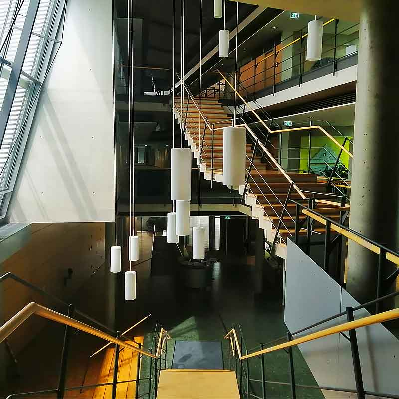

Max Planck Institute for the Physics of Complex Systems Dresden, Germany

Centre International de Rencontres Mathématiques Luminy, France

We consider ergodic dynamical systems that represent some simplified physical system with an equipped observable. The goal of extreme value theory is to establish statistical properties of maxima (or minima). These properties can inform us of the returns and return times of rare events in the system. Classical results exist for i.i.d. random variables equipped with “standard observables”. Although important, these observables do not represent physically interesting quantities. The goal of this project will be to extend extreme value results for physical observable, such as energy or voriticity which are important to climate applications.
Extremes in weather, such as tropical storms, wildfires, heatwaves, or large-scale floods can have massive societal and economic impacts from loss of property to loss of life. In this project, we seek answers to return times and magnitudes of extreme weather events in a region. We use a combination of extreme value theory, numerical global circulation models, classification algorithms, and real-world data to mathematically map out weather regions and form regional models of weather extremes. We also consider changes in the probabilities of these events under standard climate cycles and increased CO2 emission thresholds.
This project has many available branches for exploration, utilising both unsupervised and supervised machine learning methods. We combine virology experimental data with cutting-edge statistical methods to answer questions ranging from early detection of SARS-CoV-2 infection to mutation paths and likelihoods.